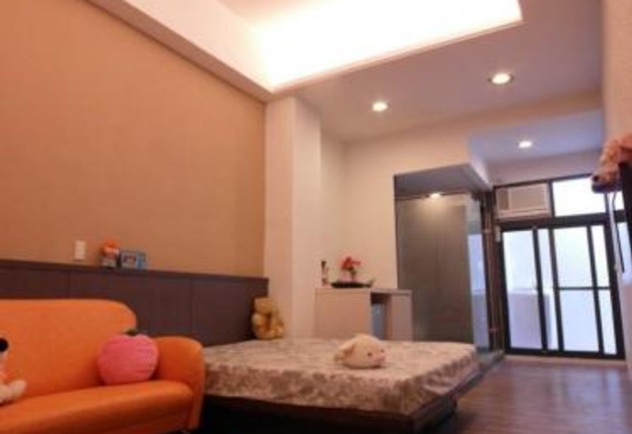
1R TYPE
勤美誠品
10,499元/月
- 広さ
- 10坪（約33.06㎡）
- 物件タイプ
- マンション
- 築年
- 調査中
- 階数
- 1F/6F
- 管理費
- 無
- 保証金
- 2ヶ月
- 仲介手数料
- 家賃1ヶ月分
PROPERTY
対応エリア：西屯区・北屯区・南屯区・北区・西区・南区・東区・中区・三井outlet

1R TYPE
10,499元/月
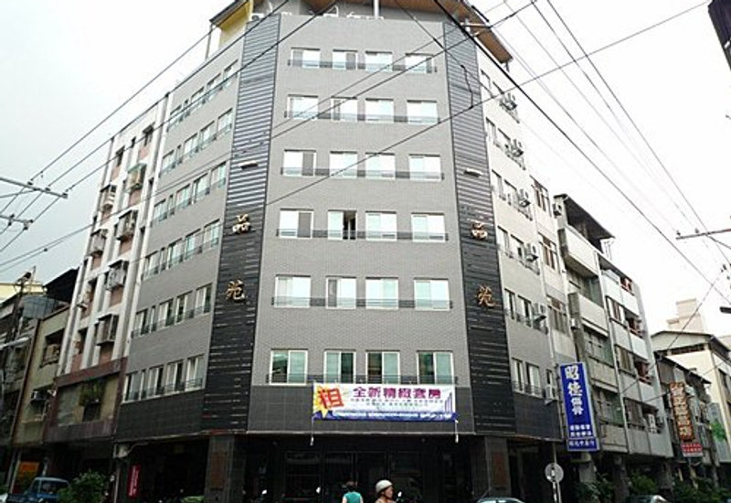
1R TYPE
7,000元/月
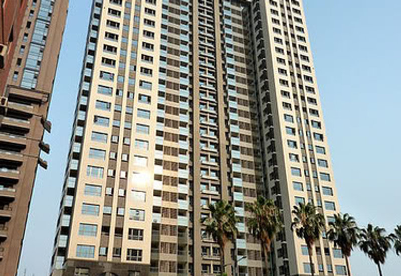
1LDK TYPE
16,800元/月
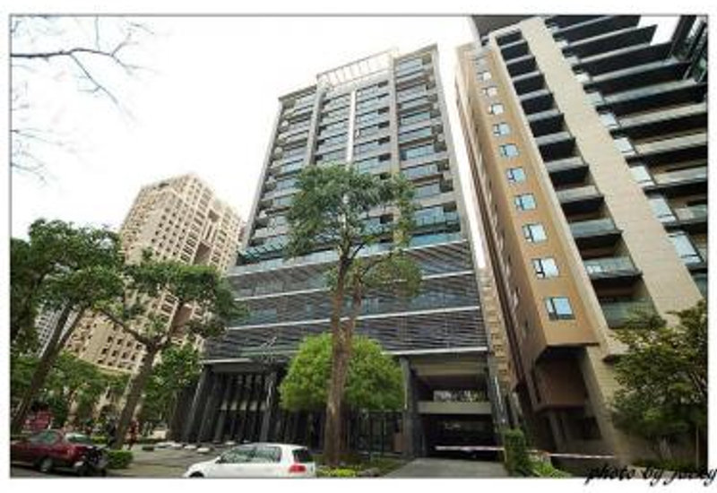
1LDK TYPE
26,000元/月
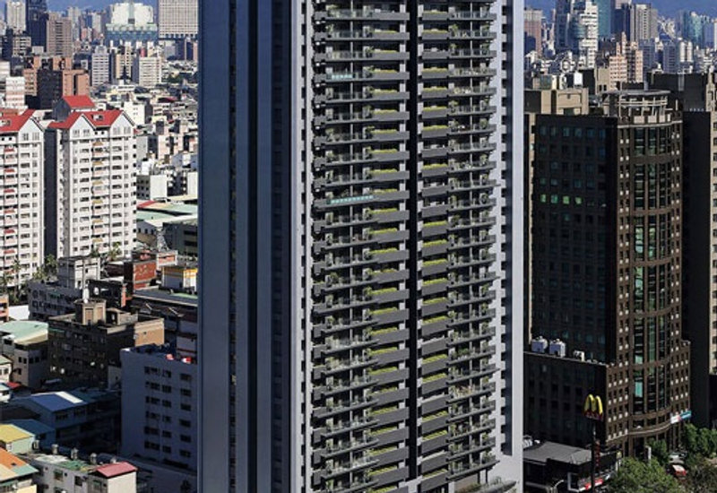
2LDK+ TYPE
72,000元/月
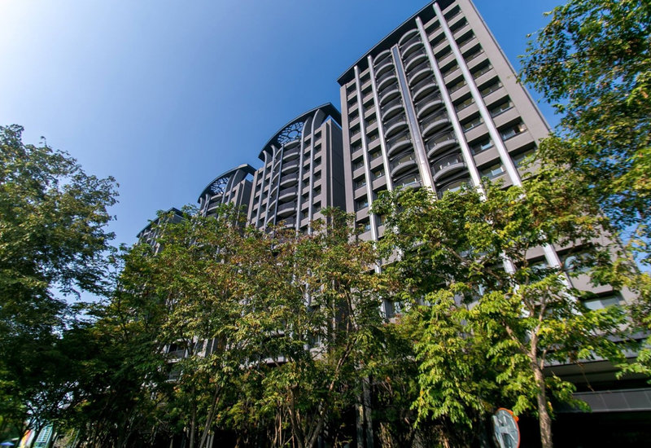
2LDK+ TYPE
25,000元/月
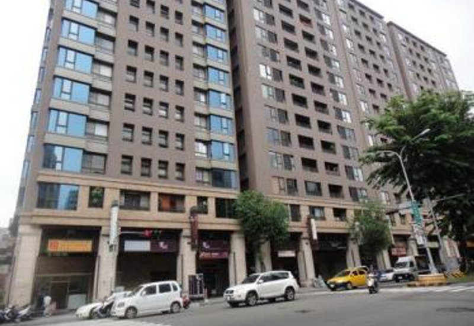
2LDK+ TYPE
27,000元/月
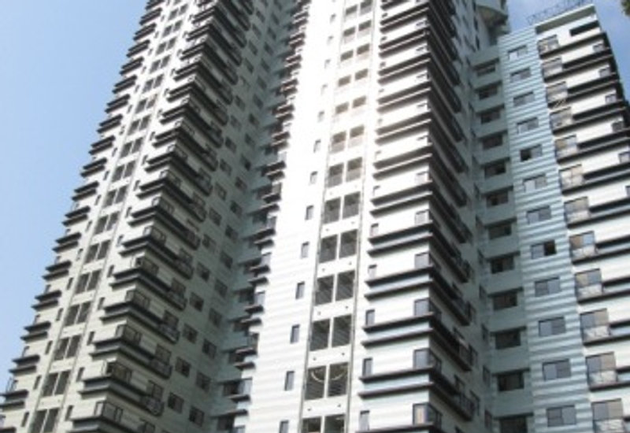
2LDK+ TYPE
25,000元/月
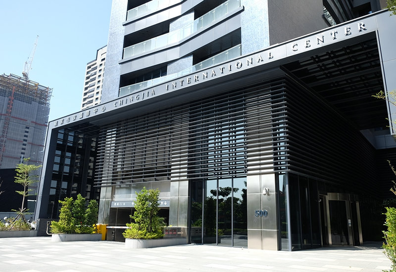
OFFICE TYPE
35,200元/月
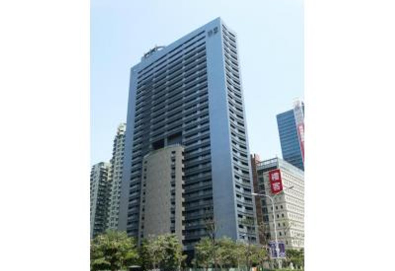
OFFICE TYPE
20,000元/月
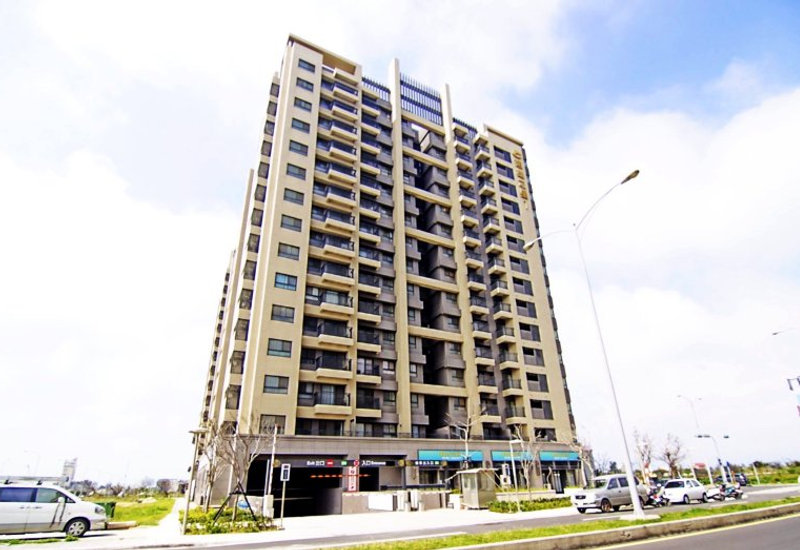
MITSUI OUTLET AREA
約18,000～25,000元/月
※広さは、台湾の商習慣上、共用部分を含んだ面積表示となります。実際のお部屋の広さは、表示の7～8割程度となりますのでご注意ください。
※掲載情報は旧サイト掲載時点のものです。最新の空室状況・賃料はお問い合わせください。
CONTACT
受付 日本時間 10:30-19:30（現地 09:30-18:30） 定休日：台湾の祝日